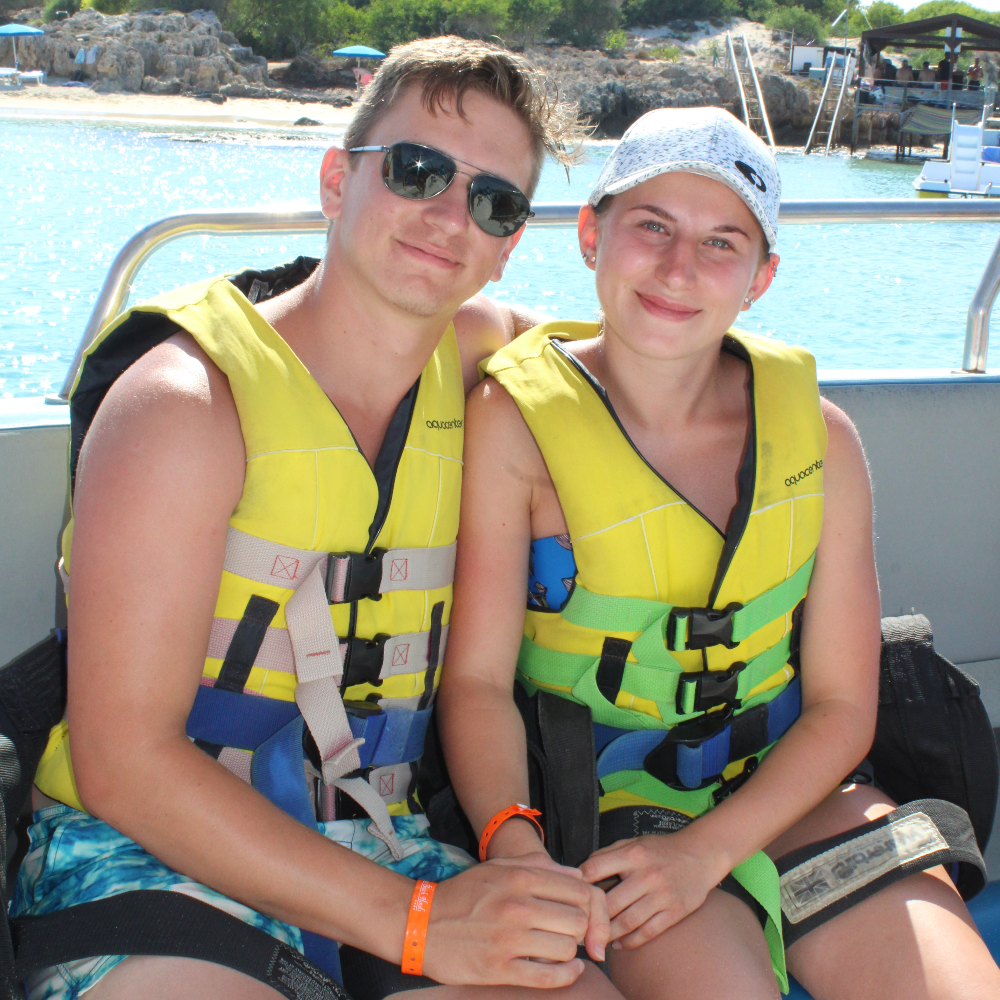
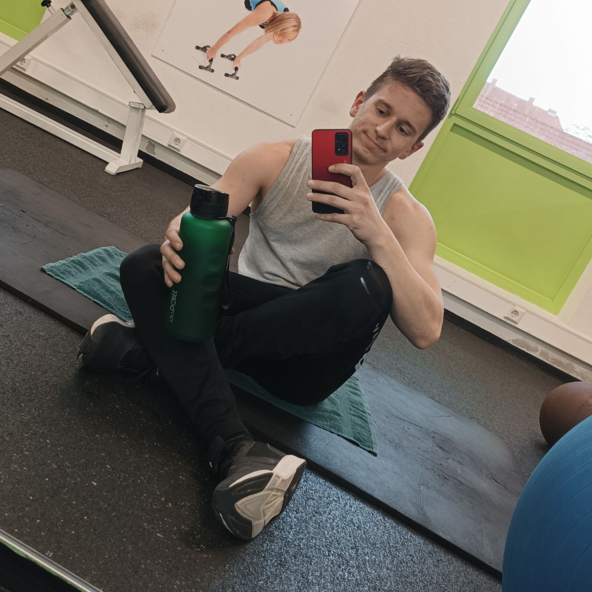

Welcome to my Website! Here, you can read some interesting facts about me,
see my recent Projects and learned Skills and you can contact me if you want to!
Have a nice day!
About Me

Hi! My name is Peter Sebestyen. I´m 25 years young and want to be a Software Developer!
I was born in Hungary and moved in 2012 to Austria. After the 9th schoolyear , i started to learn a profession at the company named Andritz Hydro.
After 3,5 years i graduated and became a Mechanical Engineer!
As time flied away, i found a new passion in Coding and decided:
"Yes, that´s what i want do do!". So i started recherching and found Codecademy.
You can also find me at the local Gym or at BoulderClub in Graz.
